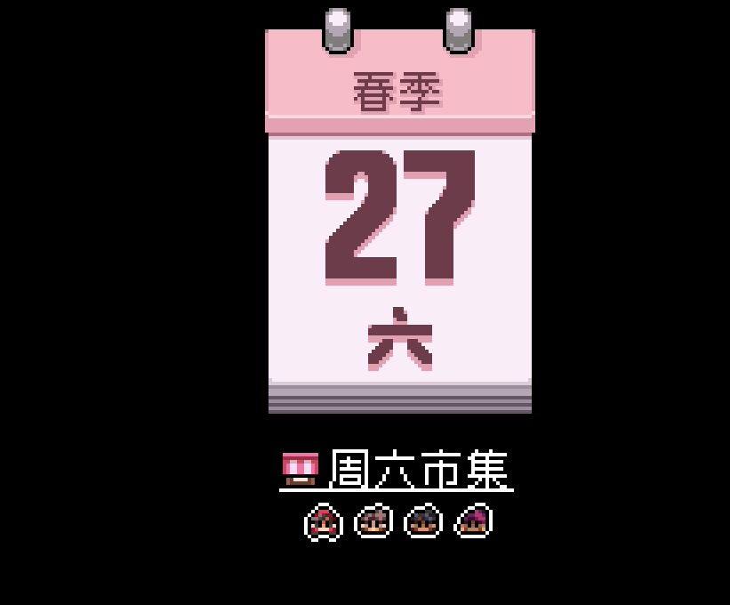
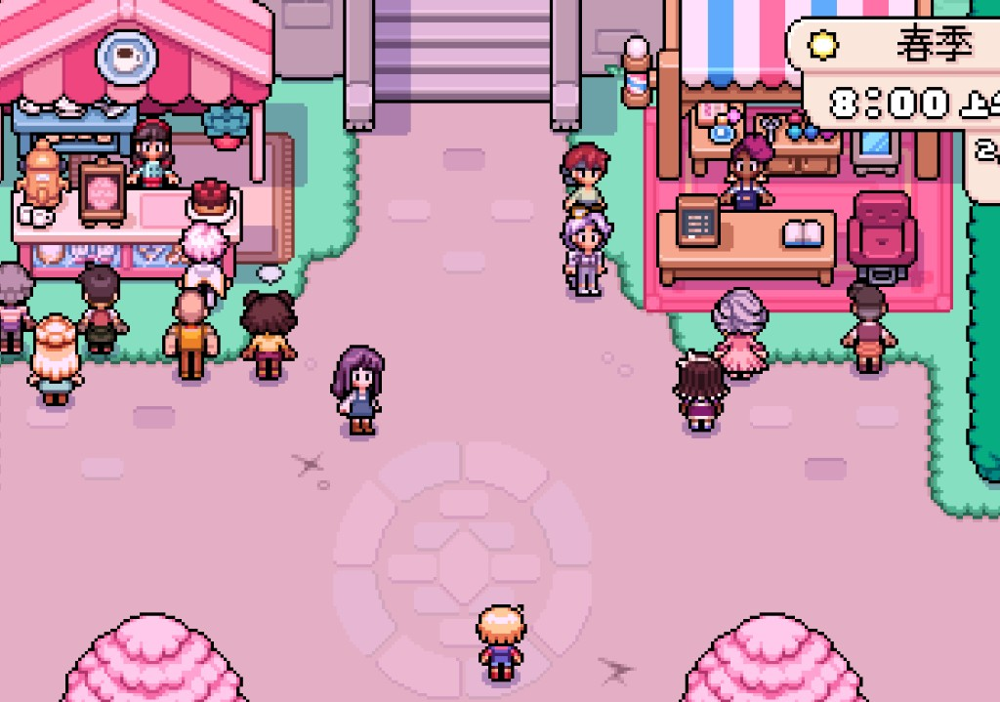
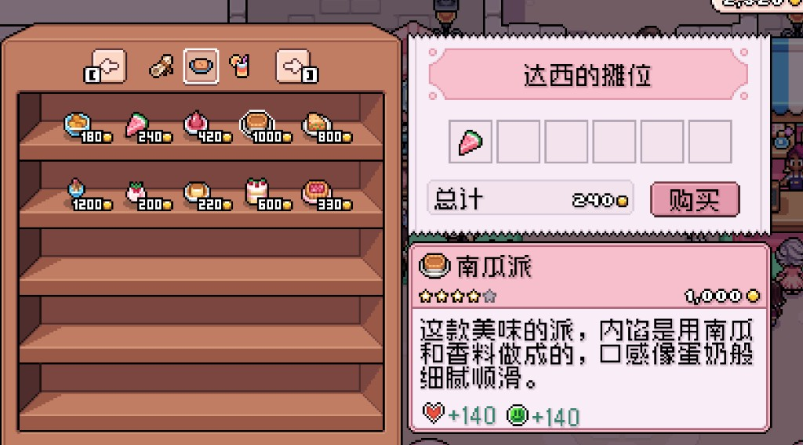
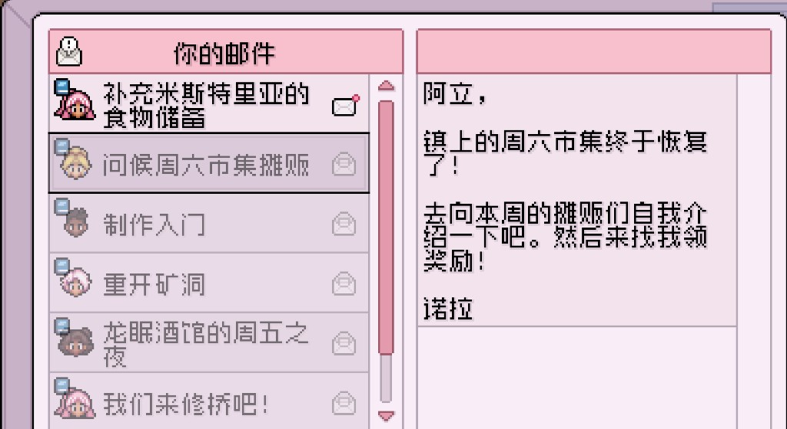

Quick answers
- Saturday market is a real weekly event—read the mail.
- One planned shop trip beats three empty doors.
- Vendors differ by day; browse before buying.
- Shipping box at shops is not your farm bin—know which is which.
- Confirm hours in your UI.
Saturday market
Mail reminded us. We bought useful food/seeds energy, not every stall curiosity. Elsie and rotating vendors show up—talk, then spend on purpose.
Closed-door lesson
Same as other farm games: walking to a shut shop wastes the afternoon. Calendar + mail first.
Safe to skip
- Buying out decorative stalls
- Market FOMO every single Saturday
Screenshots from our save
Real Fields of Mistria shots from our first-season play. Captions in English; in-game UI language may differ.




FAQ
Missed a market?
There will be another week. Farm still pays.
General store vs market?
Store is steady seeds; market is weekly extras.
Unofficial fan guide. Not affiliated with NPC Studio. Verify details in your game version.